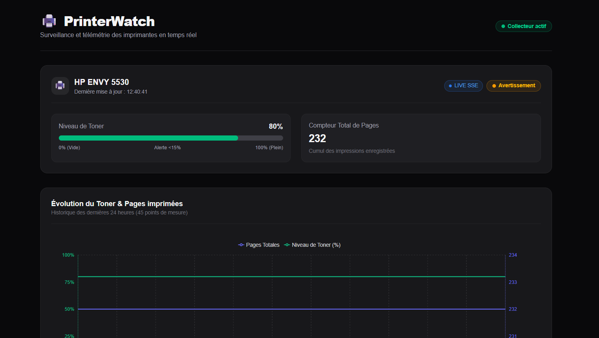

SSE plutôt que WebSocket
Le flux ne va que du serveur vers le client : les Server-Sent Events suffisent, passent par HTTP classique et le flux est fermé proprement à la déconnexion du client.
Un tableau de bord qui surveille une imprimante connectée en temps réel : état, niveau de toner, compteur de pages et journal des incidents, mis à jour en continu sans recharger la page.
Code source
Dans un bureau, on découvre souvent qu'une imprimante est en panne au moment où on en a besoin. PrinterWatch part de ce constat : collecter l'état de l'imprimante en continu, l'historiser, et le rendre lisible d'un coup d'œil.
Un collecteur relève l'état toutes les 5 secondes et l'enregistre en base. Le tableau de bord affiche la dernière valeur en direct, l'évolution sur 24 heures et les 50 derniers événements, classés par gravité.
La stack de PrinterWatch
Un processus Node indépendant (npm run collector) produit un relevé et ses événements toutes les 5 s.
Relevés et événements sont écrits dans SQLite via Drizzle, avec des index par imprimante et par date.
Une route /api/stream pousse le dernier relevé au navigateur en Server-Sent Events.
La page est rendue côté serveur avec l'historique, puis la carte de statut se met à jour en direct.
Le flux ne va que du serveur vers le client : les Server-Sent Events suffisent, passent par HTTP classique et le flux est fermé proprement à la déconnexion du client.
Le collecteur écrit pendant que l'application lit. Le journal WAL permet ces lectures et écritures simultanées sans serveur de base de données à installer.
Le schéma Drizzle génère les types TypeScript, et Zod valide les statuts et niveaux de gravité autorisés avant l'écriture en base.